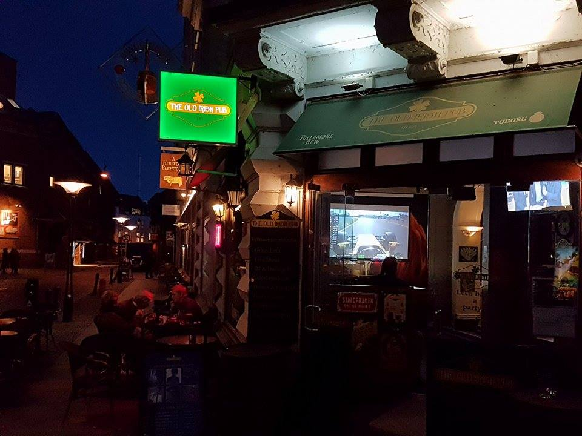

Nattelivet i Aarhus
Aarhus byder på rigtig mange hotte natklubber, barer og pubs og hvad end du er for en person, er der helt sikkert et sted for dig.
Train - fede livekoncerter
Der er flere lækre natklubber i Aarhus, men Train er en af landets største natklubber og har rigtig meget at byde på. Train kan byde på livemusik i alle musikgenre. Hvad end du er til Rock, rap, elektronisk, Jazz eller noget helt andet, så har Train en koncert der passer til dig.
Heidi's Bier Bar - Tysk Afterskibar
I centrum af Aarhus finder du Heidi’s Bier Bar, som tager dig til de Tyskland og giver en rigtig afterski stemning. Her kan du selvfølgelig få en stor skummende fadøl af mange varianter. Baren byder på den mest populære popmusik der bliver spillet på afterskibarer. Bartenderne er selvfølgelig også klædt efter barens tyske tema.
Old Irish Pub – en rigtig sportsbar
Søger du en pub, hvor du kan se live fodboldkampe fra Danmark, England og andre ligaer, så er Old Irish Pub lige noget for dig. Old Irish Pub har også livemusik hver torsdag, fredag og lørdag og pubben kører med fornuftige drinks og øl priser.
The Brick – et rigtigt diskotek
Leder du efter et fedt sted, hvor du kan danse, så er The Brick stedet. The Brick er et lækkert diskotek og bar og åbner allerede kl 21.00 torsdag, fredag og lørdag. The Brick har gode priser på udvalgte cocktails, som kan fås for 40 kr. til kl. 24.00. Musikgenren varierer fra Pop til Hip Hop og RnB.
Mange flere muligheder
De ovennævnte steder er langt fra de enesteder du kan feste eller hygge med venner en fredag aften. Der er mange flere natklubber, barer og pubs, som f.eks. Mojo, A-bar, Kupé og Bodegaen, så der vil altid være en natklub eller en bar lige efter din smag.